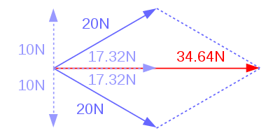

^ La loi de Newton : F = ma
J'introduis de manière concise la notion de force avec quelques exemples. Pour une autre introduction aux forces, je vous conseille la vidéo sur la loi de Newton. Cette vidéo est la 4ème d'une série de 4 vidéos [1] [2] [3] [4] liées à ce sujet sur Clipedia. Les trois premières vidéos sont une introdution historique mais la 4ème entre dans le vif du sujet. Cliquez sur vidéos liées en dessous de la vidéo pour voir les vidéos 2 à 4. N'hésitez pas à mettre la vidéo en plein écran, à arrêter ou revenir en arrière si vous le voulez, ou même de regarder la vidéo en accéléré en cliquant sur le bouton vitesse du lecteur.
Dans le monde physique, ce qui crée des accélérations, ce sont des forces. Par exemple pour la chute libre, nous avons la force de pesanteur.
Un autre exemple est la force musculaire. Quand je pousse un objet il subit une accélération dans le même sens que ma force. Au plus l'objet est gros (masse élevée), au moins l'accélération est grande. Nous avons :
$\vec{a} = \cfrac{\vec{F}}{m}$ $\iff \vec{F} = m \vec{a}$
La masse est en kg, l'accélération en m/s². Les unités d'une force sont le Newton : $N = kg\cfrac{m}{s^2}$.
Si je pousse un objet de 1kg avec une force de 1N, il subira une accélération de 1m/s². Si je pousse un objet de 10kg avec une force de 1N, il ne subira qu'une accélération de 0.10 m/s².
Si un objet subit plusieurs forces, celles-ci s'additionne (vectoriellement !). Ainsi si deux personnnes poussent un objet de 1kg chacun avec force de 20N à ± 30° comme ceci :

L'objet subira une accélération horizontale d'uniquement $34.64\ m/s²$. On a :
- $\vec{F_1} = 20N\ (\cos (30°),\ \sin (30°)) $$= (17.32,\ 10) N$
- $\vec{F_2} = 20N\ (\cos (-30°),\ \sin (-30°)) $$= (17.32,\ -10) N$
- $\vec{F_1} + \vec{F_2} = (17.32,\ 10) N $$+ (17.32, -10) N$ $= (34.64,\ 0) N$
Les composantes en y des deux forces s'annulent.
^ Chute libre
La chute libre est très pratique pour faire un saut dans un jeu.
L'accélération des corps sur la terre est la même pour tous ($a = g$), vu que $F = ma$ on a donc :
$F_g = m g$
F_chutelibre = m * g
Clique sur gravity-master-light-saber pour voir une chute libre – Clic droit pour un ralenti – Tu peux apercevoir la vitesse et l'accélération.
La direction est vers le bas. Dans pygame on aura donc une force $(0,\ m g)$ mais dans les exercices de physique où l'axe y est vers le haut on aura sûrement $(0,\ - m g)$.
^ Gravité de planètes et attraction de charges
Plus d'infos sur l'électricité dans la série de 6 vidéos sur clipedia !
$F_G = G \cfrac{m_1 m_2}{d^2}$
F_gravite = G * m1 * m2 / d ** 2

La loi de gravitation universelle dit que la force est inversément proportionnelle au carré de la distance. La direction est évidemment attractive.
Clique sur la terre pour voir la force de Newton en action – Clic droit pour un ralenti.
Vectoriellement, vu que la force est attractive, on note :
$\vec{F_G} = G \cfrac{m_1 m_2}{d^2} \ \vec{1_d}$
Où $\vec{1_d}$ est le vecteur de direction par rapport à l'autre planète.
Pour savoir la valeur de $G$ dans la vraie vie, regardez sur wikipedia.
Dans l'approximation où la distance ne change pas lorsqu'on fait une chute libre. Nous retournons à $F = mg$. Essaie de trouver le lien entre $g$ et $G$ !
La loi de coulomb est une loi qui dicte l'attraction de charges électriques. La formule est la même que la loi d'attraction (les masses sont des charges et la constante change) sauf qu'ici les charges peuvent être négatives ! Ce qui fait une répulsion.
$\vec{F_E} = -\ k_C \cfrac{q_1 q_2}{d^2} \ \vec{1_d}$
F_electricite = - kC * q1 * q2 / d ** 2- Si $q_1$ et $q_2$ sont de signes différents (l'un est positif et l'autre négatif). Alors $q_1 \cdot q_2 < 0$ et la force est attractive comme pour la gravitation.
- Si $q_1$ et $q_2$ sont de même signe (tous les deux positifs ou tous les deux négatifs). Alors $q_1 \cdot q_2 > 0$ et la force est répulsive.
La constante est ici la constante de coulomb.
Plus d'infos sur cette équation dans la série de 6 vidéos sur clipedia !
^ Ressort
$\vec{F_r} = -\ k\ \vec{x}$
F_ressort = - k * xClique sur la pierre pour voir le pouvoir du ressort – Clic droit pour un ralenti.
Le x apparaîssant ici est le déplacement depuis la position de repos. Autrement dit, le x représente l'élongation.
$k$ est le coefficient de rappel du ressort. Plus il est grand, plus les mouvements seront forts !
Un ressort est un objet qui a une position de repos (disons 5cm). Quand son élongation est de 5cm. La force est nulle.
S'il est en 6cm, il est étiré de +1cm (1cm vers la droite) et emet une force disons de -1N (1N vers la gauche). S'il est étiré de 4cm, il est étiré de -1cm (1cm vers la gauche) et emet une force de -1N (1N vers la droite).
Le ressort émet donc une force opposée et proportionnelle au déplacement par rapport au point de repos.
Nous avons donc une force opposée à l'élongation, la force fera en sorte de rappeler la masse vers la position de repos. On appelle donc cette force, force de rappel.
En 1D, le x est réel qui peut être positif ou négatif, en 2D/3D, $\vec{x}$ est un vecteur.Clique sur la pierre ci dessous pour voir un déplacement 2D.
Le x peut aussi être un angle, comme dans l'exemple suivant : 
^ Frottement linéaire
Notre ressort oscille à jamais avec l'équation prise telle quelle.
Afin de ralentir et stabiliser le mouvement, une force de frottement linéaire est souvent ajoutée.
$\vec{F_f} = -\ \alpha\ \vec{v}$
F_frottement = - alpha * vClique sur le python pour observer un angle variant comme un ressort avec frottement linéaire.
La direction est contre (opposée) à la vitesse et proportionnelle (linéaire) à la vitesse. Ainsi, au repos (v = 0), la force est nulle.
$\alpha$ est le coefficient de frottement.
^ Frottement de l'air
Le frottement de l'air est très complexe. Dans certains cas il peut être représenté par une force proportionnel au carré de la vitesse.
$F_a = c\ v^2$
F_air = c * v ** 2La direction est également opposé à la vitesse.
$\vec{F_a} = - \ c\ v^2 \ \vec{1_v}$
Attention à la précision, à haute vitesse votre simulation ne risque pas de se passer très bien.
Dans la vraie vie, calculer $c$ est un processus complexe, il dépend fortement de la surface touchant l'air dans la direction du mouvement.